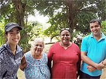
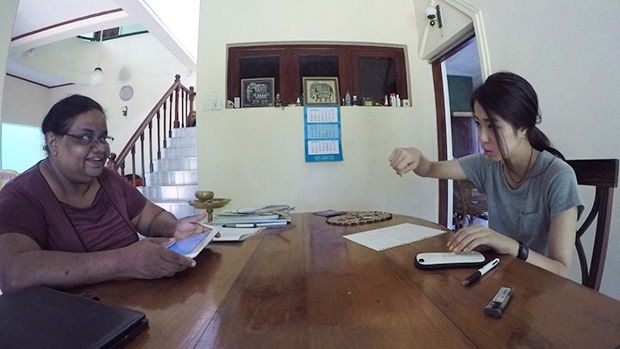
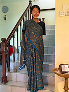
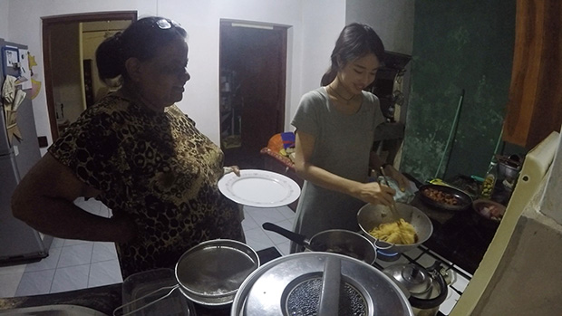
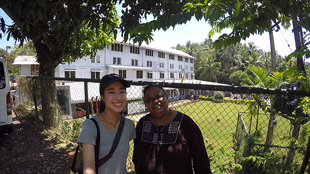
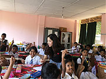
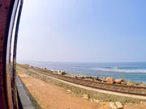
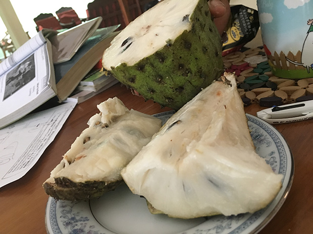

「もともとアメリカとセブ島に留学したことがあり、さらに日本人の少ない環境で英語を学びたいと思いスリランカに決めました。
そして、発展途上国でありながらも設備の整ったご家庭でのホームステイということだったので利用を決めました。
一対一の授業はやはり英語力がのびます。
また、他の留学と違って文化的な事もたくさん学べるし、ホストマザーも親身になってくれるので良かっです。
英語レッスンは、スリランカの文化や宗教などをずっとお話しして、わたしがわからないことを聞いて、常にディベートのようなものをしてたのですが、マーネルは間違った英語でも理解できてしまうので、もう少し私が話す英語を直してくれるとさらにいいなと思いました。


マーネルは本当に丁寧に教えてくれていたので、マーネルに不満があるというわけではありません！
ただ彼女が日本語を理解しているので発音などが日本語英語でも通じてしまうなというところでした。
おそらくマーネル自身英語を話せるという自信をつけさせるためにあえて言わないでいてくれたのだと思いますし、私もその時はもっと直してほしいということを伝えなかったので、どちらの方法も良いのだと思います。
初めてのホームステイだったので緊張しましたが、家族全員がすごく気を使ってくれ、私が知らないことをどんどん教えてくれようとするのが嬉しかったです。
ホストファミリーとの生活は、楽しかったです！
親戚の集まりなどに連れて行ってもらったりして、すごく親しみが持ちやすかったです。


低開発村視察は、とても勉強にはなったのですが、虫が凄すぎてマスクをしたい気分でした（笑）
スリランカの方々は、すごく外国人に慣れていないんだなぁと思ったのと、やはり貧富の差が激しいなと思いました。
外に出るときには常にパスポート、お水、お手拭き、ティッシュを持つということを事前に知っておけると良いと思います。
あと、auのアイフォンでSIMカードが使えなかったので、その点を事前に知っていればなと思いました。
マーネルが日本人のことをよく理解されてる方だったので、特に戸惑った点はなかったです。
現地受入団体の対応も日本人に近い感覚で親しみを持ちやすく、素晴らしかったです。
わからないことはすぐに対応していただきましてありがとうございました。


スリランカにまた行ってみたいです。
私自身これが最後の留学にしようと思っていたのでおそらくプログラムは利用しないですが、旅行でいつか行きたいと思います。
1ヶ月間とても楽しい時間を過ごすことができました。
普段とても忙しいので、ゆったりと過ぎていく時間を満喫できました。
大変お世話になりした。
ありがとうございました。」
